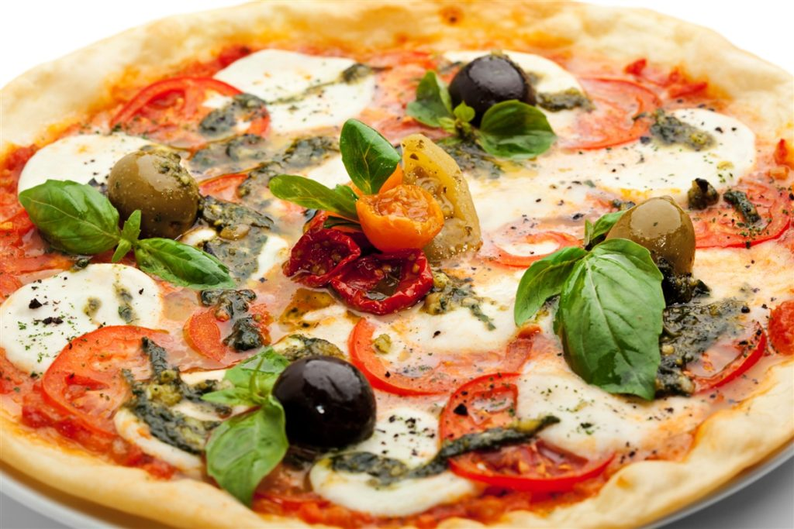

Culinary Chronicles: Showcasing the Best Food in the World
My favourite cuisines
Ukrainian

Ingridients
- Sausage
- Beetroots
- Carrots
- Potatoes
- Onion
- Cabbage
- Tomato paste
- Vegetable oil
- Garlic
- Salt, pepper
- Dill, parsley
- Sour cream
Recipe
Italian

Ingridients
- 3 ½ cups all-purpose flour
- 1 teaspoon salt
- 1 cup water
- 1 (.25 ounce) package active dry yeast
- 1 pinch white sugar
- ¼ cup flour for dusting
- 2 cups pizza sauce
- 20 slices fresh mozzarella cheese
- 20 leaves fresh basil
- olive oil
- sea salt to taste
Recipe
Indian

Ingridients
- 2 pounds skinless, boneless chicken breast halves
- 2 teaspoons salt
- ½ cup cooking oil
- 1 ½ cups chopped onion
- 1 tablespoon minced garlic
- 1 ½ teaspoons minced fresh ginger root
- 1 tablespoon curry powder
- 1 teaspoon ground cumin
- 1 teaspoon ground turmeric
- 1 teaspoon ground coriander
- 1 teaspoon cayenne pepper
- 1 tablespoon water
- 1 (15 ounce) can crushed tomatoes
- 1 cup plain yogurt
- 1 tablespoon chopped fresh cilantro
- 1 teaspoon salt
- ½ cup water
- 1 teaspoon garam masala
- 1 tablespoon chopped fresh cilantro
- 1 tablespoon fresh lemon juice
Recipe